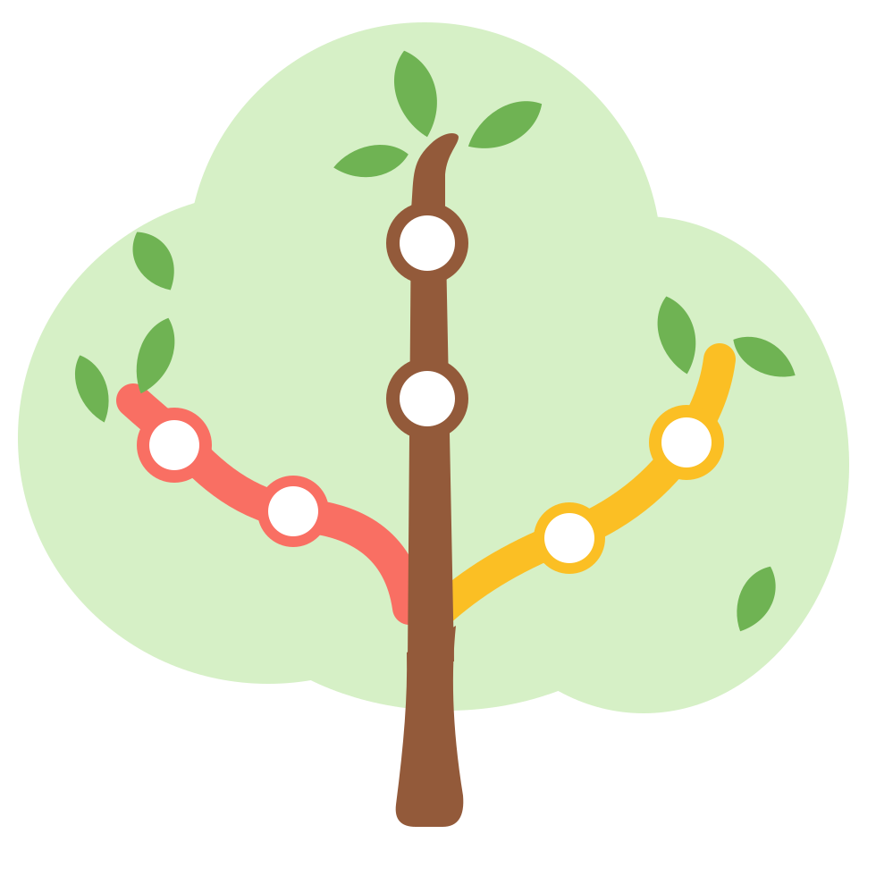
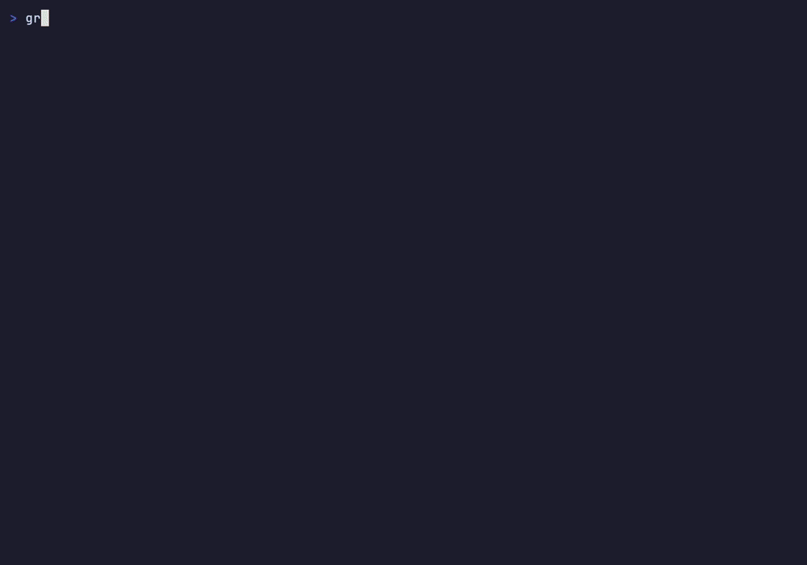
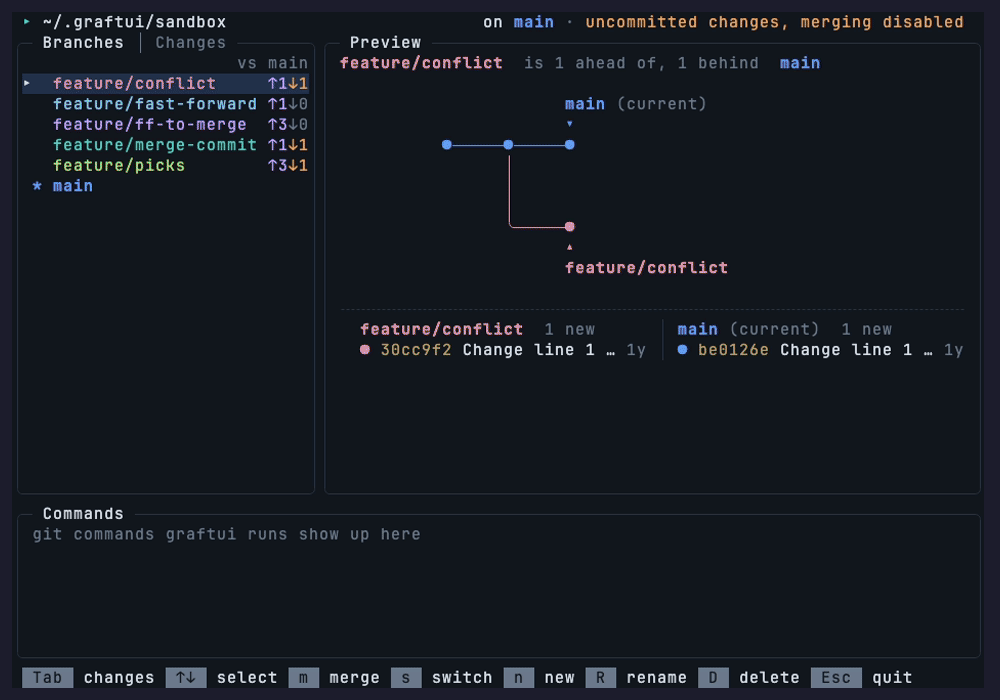
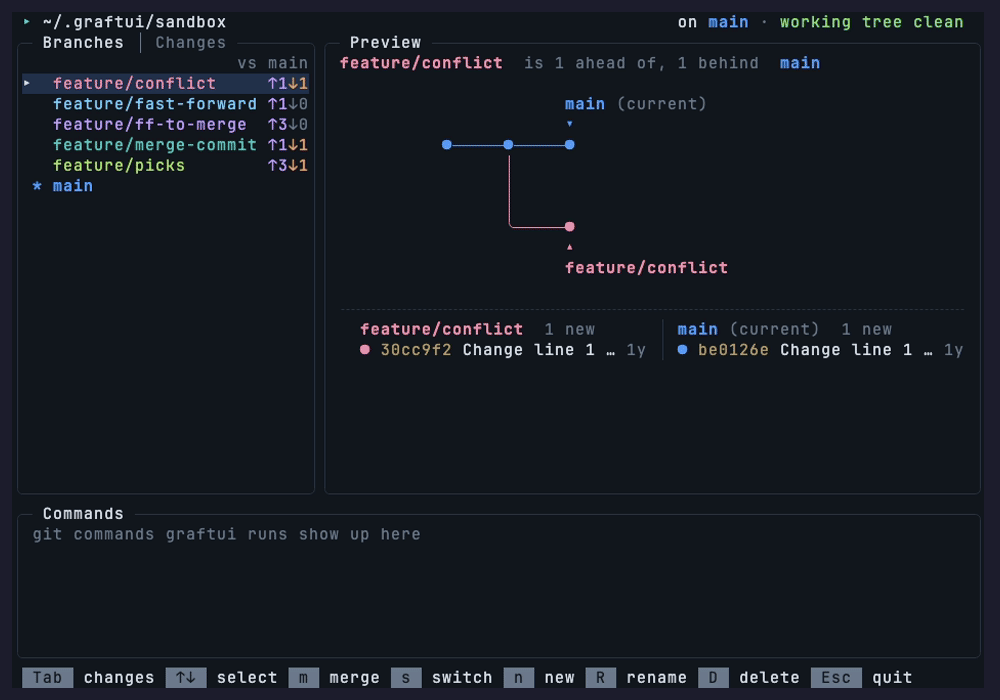
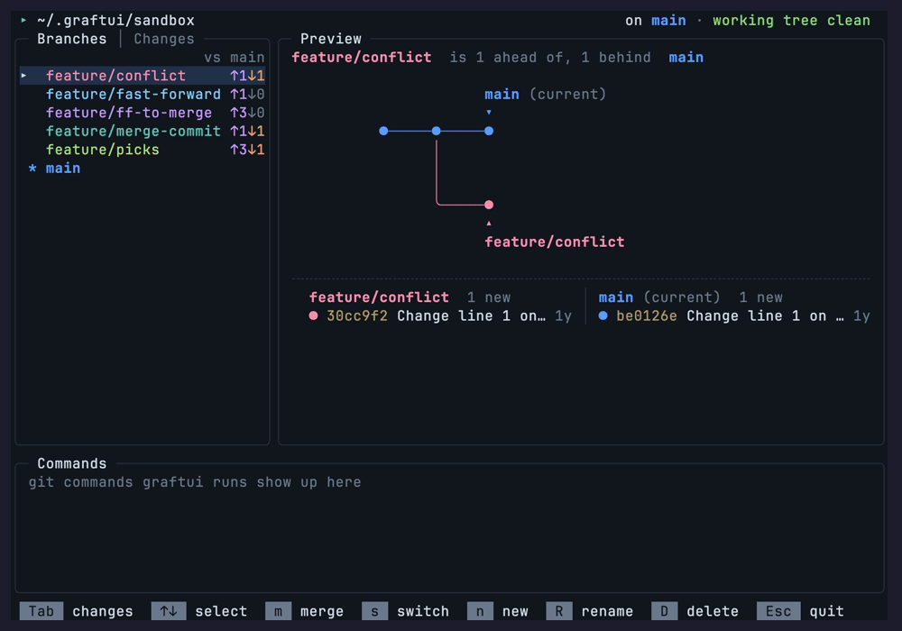

Watch your branches grow together.
An animated git TUI. Merge, stage, commit, stash, switch and undo, and see the real git commands as they run.


Everything git does,
where you can see it.
Every action is a real git command, listed in the Commands pane as you would type it. Nothing is hidden, and nothing is reimplemented.
Animated merges
Fast-forward, merge commit, already up to date, conflict and refused. Each outcome has its own animation.
Undo, step by step
Press u to step back through graftui's own actions, one at a time, on either tab.
Nothing hidden
The Commands pane lists every git command that ran. Press v for the exact list, with exit codes and output.
Practice sandbox
graftui --sandbox builds a throwaway repo with a branch for each kind of merge.
Stage, commit, and watch it land.
A three-area animation shows each file moving from the working tree to the staging area, and into the repository.
- Space stages or un-stages the selected file. a / U do them all.
- c commits, A amends the last commit.
- z / Z stash everything, untracked files included, and pop it back.

Switch branches. Keep your colors.
Local branches with ahead/behind counts, and a preview of how the selected one relates to the current branch.
- s switches, carrying along changes that don't collide.
- n creates, R renames, D deletes, each with its own animation.
- r rebases, i opens an interactive rebase todo list.

Changed your mind? Press u.
A merge commit, then u undoes it. graftui steps back through its own actions one at a time, so you can always go back to where you were.
Your repo is never left mid-merge.
A conflicting merge is aborted for you, and the Commands pane shows exactly what ran.
- Refuses to merge over uncommitted work or a detached HEAD, and offers to stash, merge and pop instead.
- Discard is always recoverable: the change is saved as a stash entry first.
- Deleting an unmerged branch asks twice.

# Commands pane ✓ git merge feature/conflict exit 1 ✓ git merge --abort exit 0 # the repo is back exactly where it was
A sandbox with a branch for every merge.
graftui --sandbox rebuilds a repository at ~/.graftui/sandbox and opens it. Run it again any time to reset. graftui only ever deletes a folder it created itself.
feature/fast-forwardFast-forwardfeature/ff-to-mergeFast-forward onto a merge commitfeature/merge-commitMerge commitfeature/conflictConflict, aborted automaticallyfeature/picksMerge commit, three commits aheadPlant it in a minute.
There's no packaged release yet. You need git and the .NET 10 SDK. Runs on macOS and Linux.
Clone the repo
git clone https://github.com/0xmmhh/graftui.git cd graftui
Install the launcher to ~/.local/bin
./dev install
Try the practice repo, then your own
graftui --sandbox graftui path/to/repo
Update with git pull && ./dev install. Windows support is a work in progress.